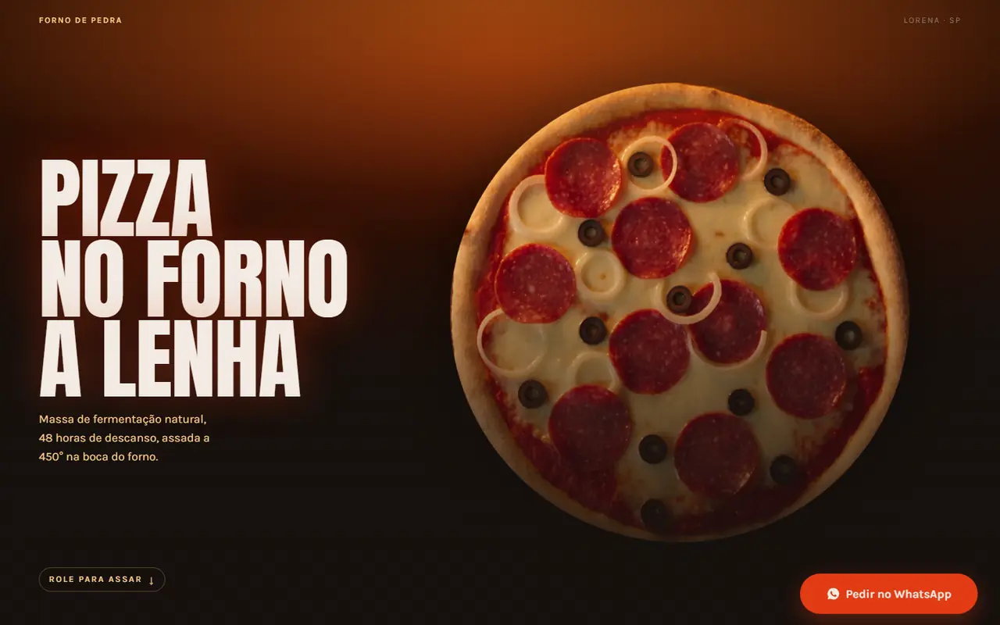

Fornode Pedra

- Tipo
- Site · modelo vídeo
- Ano
- 2026
- Pra quem
- Restaurante, doceria, loja
A pizza gira e assa enquanto a pessoa rola a tela.
Ver projetoSites, experiências digitais
e sistemas para negócios.
(01) Sobre
Crio sites rápidos, modernos e pensados pra transformar visita em conversa no WhatsApp. Para comércio, consultório, restaurante e quem mais tiver o que mostrar.
HTML · CSS · JavaScript
Feito à mão, sem template
No ar pela Vercel
(02) Trabalhos · 06 projetos
Experiências digitais pra apresentar empresas, produtos e serviços. Estes três são modelos prontos, com empresas fictícias: você escolhe um e ele ganha a cara, as fotos e o WhatsApp da sua.

A pizza gira e assa enquanto a pessoa rola a tela.
Ver projeto
Rápido, limpo e passa confiança logo de cara.
Ver projeto
O cliente monta a lista e o pedido chega pronto no WhatsApp.
Ver projetoFerramentas pra organizar e automatizar o dia a dia do negócio, feitas para negócios de Lorena. Aqui é a versão de demonstração, com dados inventados: pode mexer à vontade.

Mostra quem deve o quê, e cobra pelo WhatsApp com um toque.
Testar
Mostra quanto falta receber de cada bolo e o que entrega hoje.
TestarO que entrou, o que está sendo feito e o que já está pronto.
Demonstração em breve(03) Como funciona
(04) Contato